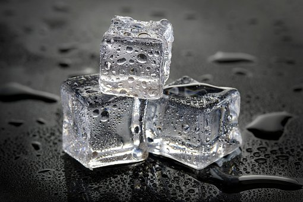

Ice

Description
Ever get tired of that special beverage not staying cold long enough? Well
fear no more, this recipe will have you covered.
A cult classic, ice will ensure that your drink stays as cold for as long as you desire,
making sure you stay refreshed. This
may not be considered a life altering recipe but it certainely will knock your socks
off.
Ingredients
- 2 cups of water (approximately)
- 2 tablespoons water (additional if needed)
- A tray that fits within your freezer
Steps
- Empty the ice cubes that are left in the trays (if there are any left) into the bin.
-
Take the trays over to the sink and fill them with cold water. (Hot water will
freeze faster and more clear).
- Place the water filled ice trays back in the freezer.
- Replace the ince bin if you hadto remove it.
- shut the door to the freezer.
- Be sure to leave for around 4-6 hours at least to make sure it is frozen.
- If you want to experiment, you can freeze things like fruit infused waters or juices.
Homepage